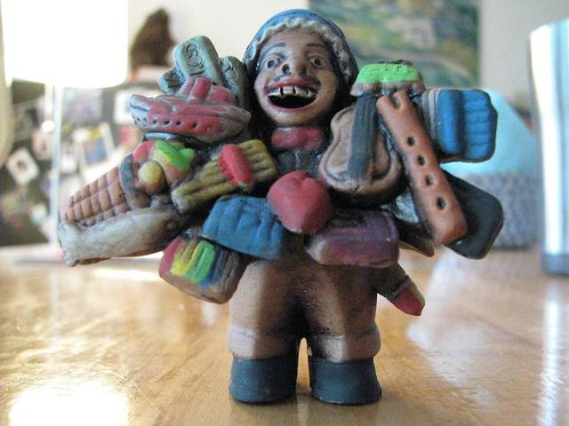
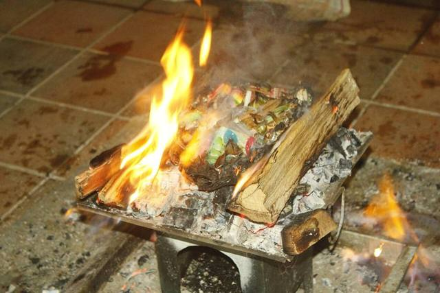
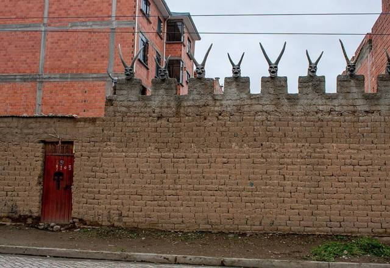
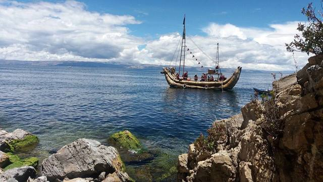
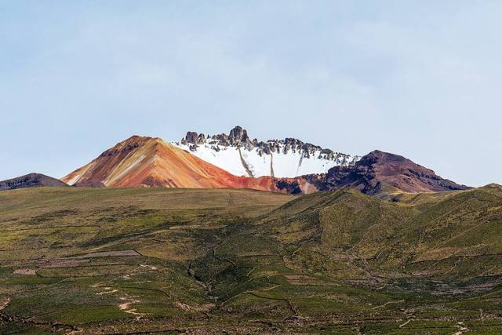
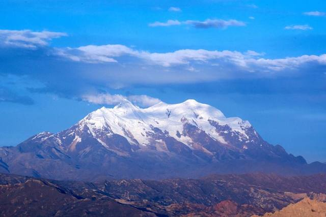
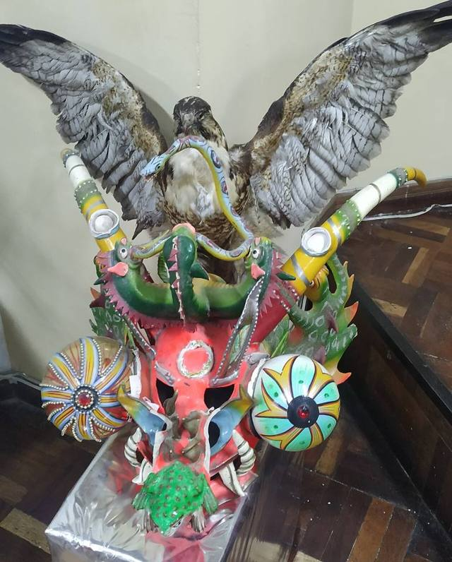
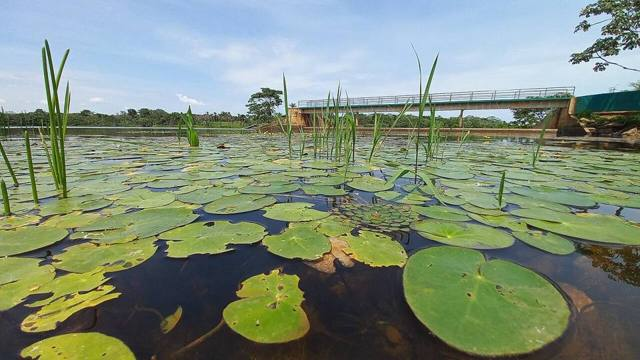

Ekeko
A small moustached man loaded with bags of food, banknotes and miniature objects, Ekeko is the Aymara god of abundance. People offer him a cigarette and trust him with their wishes, especially during Alasitas.
Where: La Paz
The stories told in Bolivia, and the places where they happen.

A small moustached man loaded with bags of food, banknotes and miniature objects, Ekeko is the Aymara god of abundance. People offer him a cigarette and trust him with their wishes, especially during Alasitas.
Where: La Paz

Mother Earth, who gives life and harvests. People pour a few drops of chicha for her before drinking, and in August, when the earth is "hungry", they burn offering tables for her.

Deep in the Cerro Rico mines, a horned statue guards the veins: the Tío, lord of the underworld. Miners offer him coca, alcohol and cigarettes so that he protects them and gives them ore.
Where: Potosí

According to Inca legend, the Sun brought his children Manco Cápac and Mama Ocllo out of Lake Titicaca, near the Isla del Sol, to found Cusco and the Inca empire.
Where: Isla del Sol · La Paz

The mountain Tunupa, abandoned by her husband, wept while nursing her child: her tears and milk are said to have formed the Salar de Uyuni, which she still overlooks to the north.

Mountains are achachilas, protective ancestors. It is said that Illimani, in a fit of jealousy, knocked off Mururata's head with a sling: that's why its neighbour has a flat top.
Where: La Paz

The god Wari sent a toad, a lizard, a snake and ants to punish the people of Oruro. A princess turned them to stone: you can still see them around the town.
Where: Oruro

In the eastern lowlands, the Jichi is the guardian spirit of water, often a snake or a jaguar. It is said that if it isn't respected, wells and lagoons dry up.
Where: Missions: San Javier · Santa Cruz Missions: Concepción · Santa Cruz